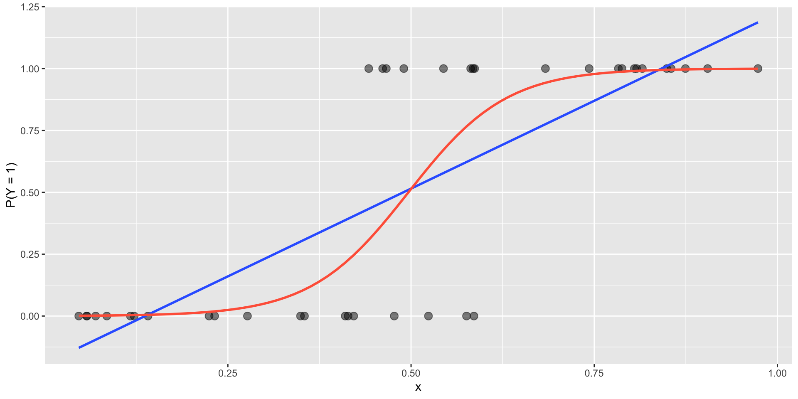
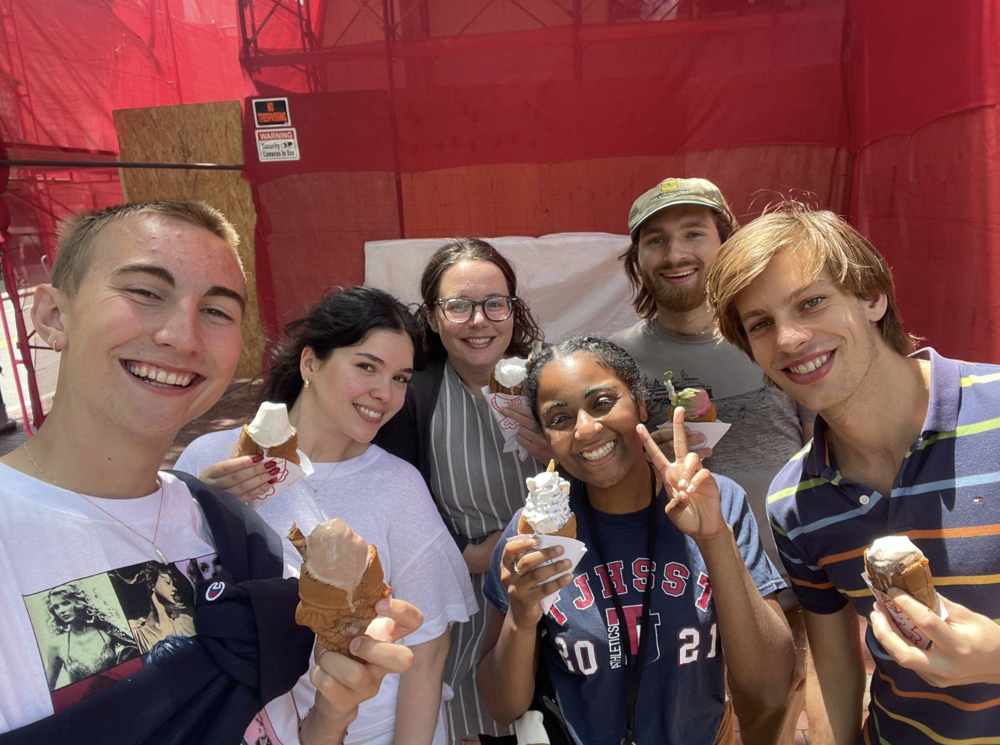
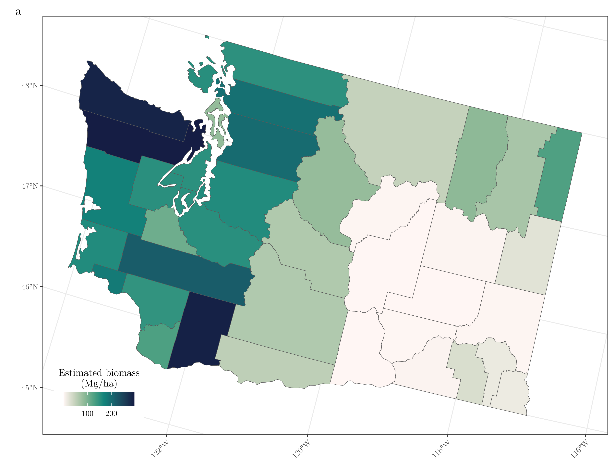
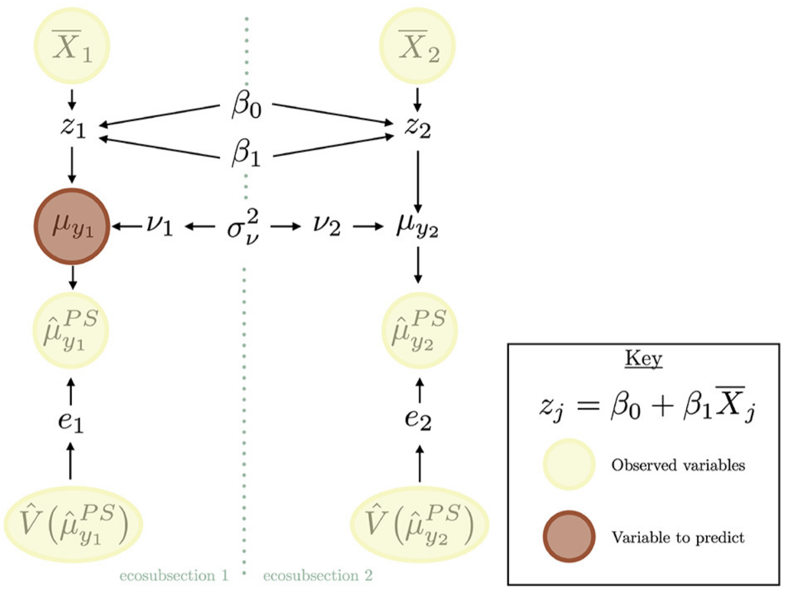
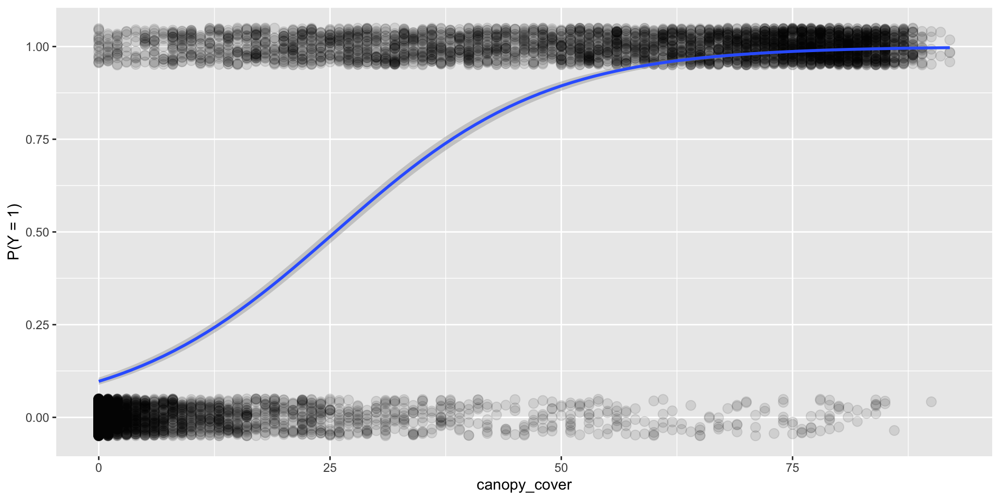
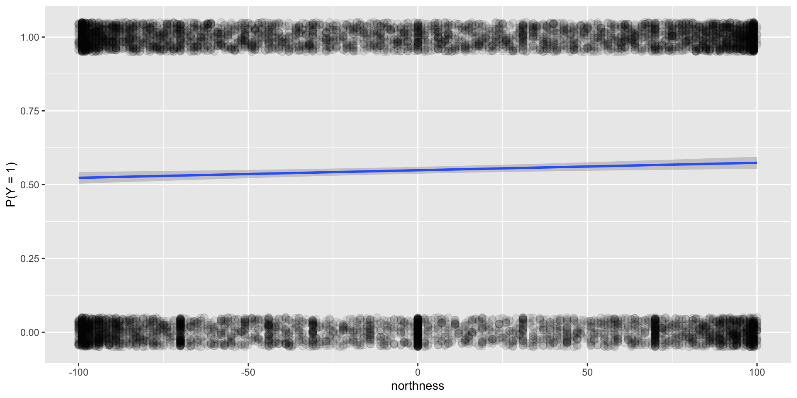

Logistic Regression
Grayson White
Math 141
Week 14 | Fall 2025
Goals for Today
- Discuss summer opportunity
- Introduce logistic regression
Summer Opportunity: Undergraduate Forestry Data Science (UFDS)!
Undergraduate Forestry Data Science Summer Research
This summer, I’ll be hiring Reed students in my undergraduate forestry data science (UFDS) program!
UFDS is a long-running collaboration with the US Forest Service where we answer statistical and data science research questions for the US Forest Service.
Students will work on problems generated by the Forest Service and will collaborate directly with Research Statisticians and Foresters at the Forest Service.
Co-directed by myself and Kelly McConville (Bucknell University), this summer’s research will occur on Reed’s campus and will include students from both colleges!

Undergraduate Forestry Data Science Summer Research
This summer, I’ll be hiring Reed students in my undergraduate forestry data science (UFDS) program!
Students will work in small groups on multiple projects throughout the summer. Some tentative projects for this summer:
- In recent years, FIA has experienced greater need for estimates of forest parameters over smaller geographic regions. For example, the Forest Service manages wild fires and tries to estimate the impact of these fires on important forest attributes. This area of research is called small area estimation. This project will explore the utility of several different estimators for estimating forest attributes over small areas.

Undergraduate Forestry Data Science Summer Research
This summer, I’ll be hiring Reed students in my undergraduate forestry data science (UFDS) program!
Students will work in small groups on multiple projects throughout the summer. Some tentative projects for this summer:
- Bayesian statistics is a field of statistics we have discussed but not engaged in this semester. The Forest Service is interested in using Bayesian statistics and models to operationalize small area estimation, but they need guidance on the mechanics of fitting these models. This project will first learn about, and then write a tutorial on, operationalizing Bayesian small area estimation for the forest service and in forest inventory settings more generally.

Undergraduate Forestry Data Science Summer Research
This summer, I’ll be hiring Reed students in my undergraduate forestry data science (UFDS) program!
Students will work in small groups on multiple projects throughout the summer. Some tentative projects for this summer:
- Simulation studies are crucial for understanding the properties of model-based estimators. And recently, the Forest Service has been interested in assessing estimators that account for change in the forest (from, e.g., a forest fire or clearcut). In this project, students will adapt the KBAABB methodology to help assess estimators that estimate change.

Undergraduate Forestry Data Science Summer Research
This summer, I’ll be hiring Reed students in my undergraduate forestry data science (UFDS) program!
Some tentative details (subject to change):
10 week program, starting June 1, 2026.
Stipend included (approx: $6000)! (Actual amount and housing details TBD)
Ice cream excursions and lots of fresh fruit included!
We are planning to open applications over the break or in the first week of Spring semester. So be on the lookout! (I will send an email to you all)
FAQs
Why should I do summer research?
Learning by doing data science: Practicing data science can really help you develop as a data scientist.
Communication skills: You will have multiple opportunities to share your work (both in writing and orally) to your peers, your mentor (me!), the stakeholders, and novices. I will give you feedback to help you hone your communication skills.
Professional identity and belonging: Research can help strengthen your connection to the discipline of statistics.
Graduate school and career preparation/clarity: The experience will demystify what research is, helping you decide if you want to pursue an advanced degree. And, grad school or not, the tools and skills learned will help prepare you for your professional life after undergrad.
And, it is fun: The data are messy! The questions are vague! The answers are unknown! What more could you want?
Will I get to co-author a publication out of this?
Maybe!
At the start of a project, it is very difficult to predict whether or not it will result in a publication. And, for some projects, a journal article may not be the most useful final product. So, I can’t say with any certainty whether or not your work will be published but I can say that we will find ways for you to share the work. For example, the group will present their findings to Forest Service researchers and will be expected to participate in any relevant campus research presentation events.
What should I expect from a day of research?
- The work will be highly collaborative. Most days we will have a team meeting in the morning where everyone presents their progress, discusses issues, and talks through their next steps. For the rest of the day, your time will likely be split between your projects and will be a mix of coding, writing, problem-solving, and dealing with merge conflicts in GitHub.

Do I need to be a certain major to apply?
No way! UFDS fellows have been majors ranging from Mathematics to English to Statistics to Economics and beyond!
Diverse perspectives are always encouraged here. Coming from a different field often brings a very valuable and unique perspective!
What courses are required?
I hope that everyone in the program has taken Math 141 (good job, you have already done that)! Other experience in data science (such as Math 241) is very helpful! A computer science course can be helpful as well.
Regardless of the courses taken, I expect prior experience coding in R and building statistical models (which you have done in Math 141).
How do I apply?
Wait for the Summer 2026 application to be posted this winter break (or in the first week of Spring semester). I’ll email you all once I have posted it!

Logistic Regression
Logistic Regression
Logistic regression can be used when:
- Response variable: binary, categorical variable
- Explanatory variables: Can be a mix of categorical and quantitative variables
Logistic Regression
Response variable: A categorical variable with two categories
\[\begin{align*} Y = \left\{ \begin{array}{ll} 1 & \mbox{success} \\ 0 & \mbox{failure} \\ \end{array} \right. \end{align*}\]\(Y \sim\) Bernoulli \((p)\) where \(p = P(Y = 1) = P(\mbox{success})\).
Explanatory variables: Can be a mix of categorical and quantitative
Goal: Build a model for \(P(Y = 1)\).
Why can’t we use linear regression?
Regression line = estimated probability of success
For valid values of \(x\), we are predicting the probability is less than 0 or greater than 1.
The estimated probabilities based on the logistic regression model are bounded between 0 and 1.
What does the logistic regression model look like?
Logistic Regression Model
\[\begin{align*} \log\left(\frac{P(Y = 1)}{1 - P(Y = 1)} \right) &= \beta_o + \beta_1 x_1 + \beta_2 x_2 + \cdots + \beta_p x_p \end{align*}\]Left hand side has many interpretations:
\[\begin{align*} \mbox{LHS} &= \log\left(\frac{P(Y = 1)}{1 - P(Y = 1)} \right)\\ &= \log \left( \mbox{odds (of success)} \right)\\ &= \mbox{logit}(P(Y = 1)) \end{align*}\]Note:
\[ \mbox{odds} = \frac{\mbox{prob of success}}{\mbox{prob of failure}} \]
Example
Let’s look at the forested R package that contains a dataset on whether a given location in Washington state is considered to be “forested” or not (by the US Forest Service’s definition of “forested”). We’ll ask the question: Can we build a model to predict whether or not a location is forested given some useful predictors derived from satellite imagery and other remote sensing products?

Example
forested <- forested %>%
mutate(forested = case_when(forested == "Yes" ~ 1,
forested == "No" ~ 0))
str(forested)tibble [7,107 × 20] (S3: tbl_df/tbl/data.frame)
$ forested : num [1:7107] 1 1 0 1 1 1 1 1 1 1 ...
$ year : num [1:7107] 2005 2005 2005 2005 2005 ...
$ elevation : num [1:7107] 881 113 164 299 806 736 636 224 52 2240 ...
$ eastness : num [1:7107] 90 -25 -84 93 47 -27 -48 -65 -62 -67 ...
$ northness : num [1:7107] 43 96 53 34 -88 -96 87 -75 78 -74 ...
$ roughness : num [1:7107] 63 30 13 6 35 53 3 9 42 99 ...
$ tree_no_tree : Factor w/ 2 levels "Tree","No tree": 1 1 1 2 1 1 2 1 1 2 ...
$ dew_temp : num [1:7107] 0.04 6.4 6.06 4.43 1.06 1.35 1.42 6.39 6.5 -5.63 ...
$ precip_annual : num [1:7107] 466 1710 1297 2545 609 ...
$ temp_annual_mean: num [1:7107] 6.42 10.64 10.07 9.86 7.72 ...
$ temp_annual_min : num [1:7107] -8.32 1.4 0.19 -1.2 -5.98 ...
$ temp_annual_max : num [1:7107] 12.9 15.8 14.4 15.8 13.8 ...
$ temp_january_min: num [1:7107] -0.08 5.44 5.72 3.95 1.6 1.12 0.99 5.54 6.2 -4.54 ...
$ vapor_min : num [1:7107] 78 34 49 67 114 67 67 31 60 79 ...
$ vapor_max : num [1:7107] 1194 938 754 1164 1254 ...
$ canopy_cover : num [1:7107] 50 79 47 42 59 36 14 27 82 12 ...
$ lon : num [1:7107] -119 -123 -122 -122 -118 ...
$ lat : num [1:7107] 48.7 47.1 48.8 45.8 48.1 ...
$ land_type : Factor w/ 3 levels "Barren","Non-tree vegetation",..: 3 3 3 3 3 3 2 2 3 2 ...
$ county : Factor w/ 39 levels "Adams","Asotin",..: 10 34 37 30 33 33 26 27 27 24 ...- Each row represents a plot collected by the US Forest Service
- Response variable?
- Potential good predictors?
Example
Example
This is what an helpful explanatory variable looks like!

This is what an unhelpful explanatory variable looks like!

Question: How do we fit the model (the blue curve) in R?
Logistic Regression Table
# A tibble: 2 × 5
term estimate std.error statistic p.value
<chr> <dbl> <dbl> <dbl> <dbl>
1 (Intercept) -2.23 0.0557 -40.0 0
2 canopy_cover 0.0872 0.00194 45.0 0- But what do the coefficient estimates \(\hat{\beta}_0 = -2.230\) and \(\hat{\beta}_1 = 0.087\) represent?
Interpretation of Coefficients
Recall the (2) following definitions:
(1) Odds:
\[\text{odds} = \frac{\text{prob of success}}{\text{prob of failure}} = \frac{P(Y = 1)}{1 - P(Y = 1)}\]
and (2) the logistic regression model:
\[\log\left(\frac{P(Y = 1)}{1 - P(Y = 1)}\right) = \beta_0 + \beta_1 x_1\]
So then
\[\text{odds} = \exp\left(\beta_0 + \beta_1 x_1\right)\]
Interpretation of Coefficients
New concept:
Odds ratio: Comparison of odds between two groups
\[\text{odds ratio} = \frac{\text{odds of group 1}}{\text{odds of group 2}}\]
Interpretation of odds ratio: The odds of success in group 1 are insert # times the odds of success in group 2.
Note: Also useful property:
\[\exp(a + b) = \exp(a) \exp(b)\]
Interpretation of Coefficients
(estimated) odds for \(x_1 = t\)% covered canopy:
\[\exp\left(\hat{\beta}_0 + \hat{\beta}_1 t\right)\]
(estimated) odds for \(x_1 = (t + 1)\)% canopy cover:
\[\exp\left(\hat{\beta}_0 + \hat{\beta}_1 (t + 1)\right)\]
odds ratio:
\[\frac{\exp\left(\hat{\beta}_0 + \hat{\beta}_1 (t + 1)\right)}{\exp\left(\hat{\beta}_0 + \hat{\beta}_1 t\right)} = \frac{\exp(\hat{\beta}_0)\exp(\hat{\beta}_1 (t + 1))}{\exp(\hat{\beta}_0)\exp(\hat{\beta}_1 t)} = \exp(\hat{\beta}_1)\]
Interpretation of Coefficients
How do we interpret \(\hat{\beta}_1 = 0.087\)?
\[\exp(\hat{\beta}_1) = \frac{\text{odds of being forested for canopy cover } (t + 1) \text{\%}}{\text{odds of being forested for canopy cover } t \text{\%}}\]
Prediction
How can I use this model to predict, for a given canopy cover, whether a plot is forested or not?
We can use the predicted probability at a plot to help us predict the binary outcome.
\[\widehat{P(Y = 1)} \geq 0.5 \rightarrow \hat{y} = 1\] \[\widehat{P(Y = 1)} < 0.5 \rightarrow \hat{y} = 0\]
Prediction Accuracy
Prediction Accuracy
forested2 <- forested %>%
bind_cols(preds = preds) %>% # quickly add as a column
mutate(pred_forested = case_when(
preds >= 0.5 ~ 1,
preds < 0.5 ~ 0
))
forested2 %>%
count(forested, pred_forested)# A tibble: 4 × 3
forested pred_forested n
<dbl> <dbl> <int>
1 0 0 2865
2 0 1 348
3 1 0 573
4 1 1 3321- Pretty good!
- Still problems with over-fitting!
- Need to learn about splitting your data into testing and training sets (Math 243).
Next time: Wrap-Up!
Remember: we meet for lab tomorrow at our regular time and location.
Lot’s of practice problems to work through!
(Logistic regression won’t be on the final exam.)